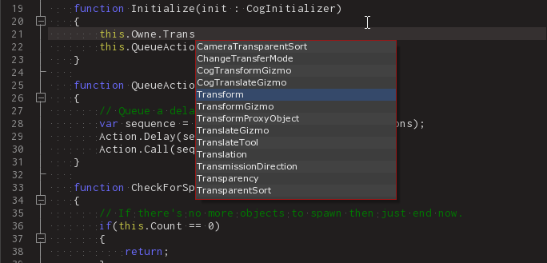

Tab Completion
Many code editors offer some form of code completion that suggests token or line options based of the characters that have already been typed on the current line. Zero offers both local auto completion and syntax aware tab completion.
Common Uses
- Reduces amount of typing
- Encourages proper code formatting
- Reduces chance for simple human typing, spelling, and character case errors.
- Reduces the mental requirements from the user for the context of the code being written.
Using Tab Completion
Tab Completion Feedback
While the tab completion window is open one may notice it occasionally will have a red border.

This indicates that a completed token on the line preceding the token currently being typed is invalid. In this case Owner has been mistyped as Owne resulting in an invalid token in the line which will result in an exception being thrown if the project is saved. This creates a situation where the tab completion system does not have a valid context from which to suggest tokens. The tab completion window will still offer suggestions from when the context was last valid.
Tab Completion and Script Errors
Occasionally when using the code editor the user may find that class types which they defined are not available at tab complete options. This usually happens when trying to declare a variable of a type that was just defined and indicates there is an error somewhere in the project. Since Zilch is a statically compiled language each file must individually compile in order for the whole project to do so. This allows all contexts within the user’s code to be aware of all definitions within the project. However, it means that since tab completion depends on a clean project compilation that a single error will prevent tab completion options from being correctly generated. In this case the tab completion menu will use the list generated the last time the project compiled cleanly.